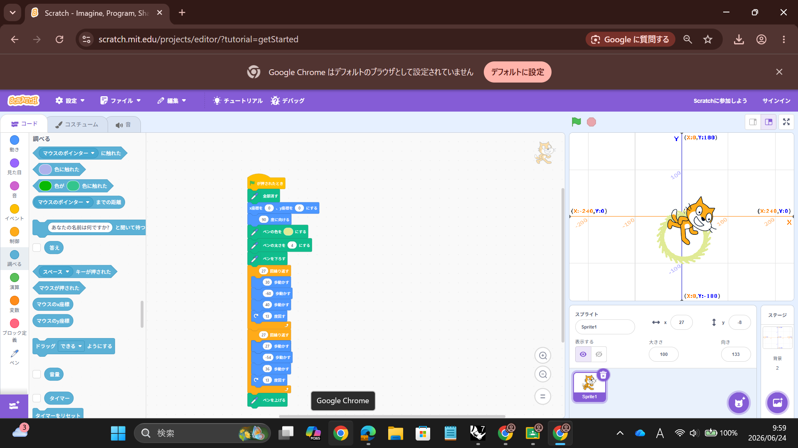
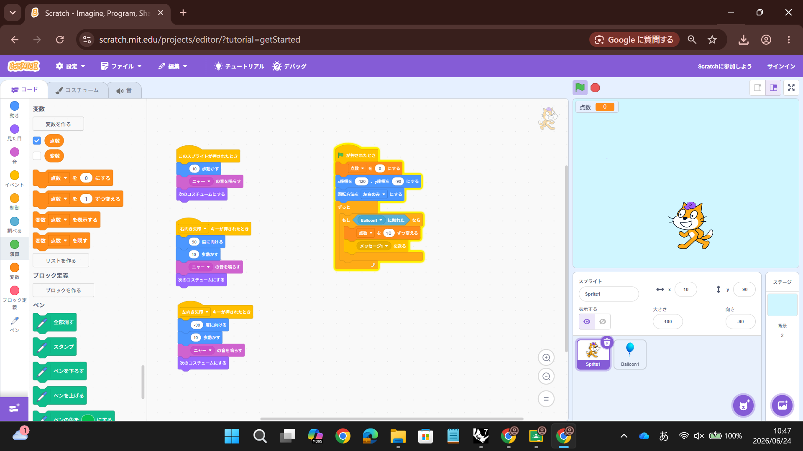

1週目のレポート ： 公大高専１年実習I-1
2a班20番 emi1224
第1週目
1-1 サイエンスアート

1.内容
Scratchによるサイエンスアートとゲームプログラムを行った。サイエンスアートでは猫の動きに合わせて線を引く、猫を移動させるプログラム、移動に合わせて線を引く、
書くたびに先の色を変える、繰り返し移動させて図形を描かせた。 2.感想
自分は小中学校のころ授業や趣味でほんの少しだけスクラッチを触っていたことがあったので、ある程度は自分でプログラムできると思っていたが、
実際に触ってみると知りようをよく見ながら出ないとプログラムできなくて、プログラミングはとても奥が深いなと思った。
1-2 ゲーム

1.内容
Scratchによるゲームプログラムを行った。ゲームプログラムでは猫を移動させて、落ちているリンゴをつかむというゲームを製作するために、
旗が押されたら、スプライトに触れたら動く、音が鳴る、コスチュームを変える、キーボードの矢印キーで動作させる、反転の設定をする、背景の設定をするという
プログラミングを行った。 2.感想
Scratchは触ったことがあるものの、ゲームプログラムまでは行ったことがなかったのでとても新鮮な体験をできて楽しかった。
自分が今まで使ったことのないコードを使ってプログラムしたり、新しいコードの使い方を知れてとても楽しかった。プログラミングの可能性は無限大だなと思った。
1-3 ホームページ作成
私のホームページ
1.内容
GitHubという環境でマークアップ言語のひとつであるHTML（ホームページ用の文書をつくる言語）を体験した。
実習メモをホームページとして記録した。 2.感想
自分は今までホームページを作ったことがなかったのですが、仕組みを知れば思っているより簡単に作れるのかなと思いました。
でも、自分で打っていないコードが多いのでまだまだプログラミングは面白い要素がたくさんあるんだなと思いました。
各ページへのリンク
1週目のレポート
2週目のレポート
3週目のレポート
私のホームページ